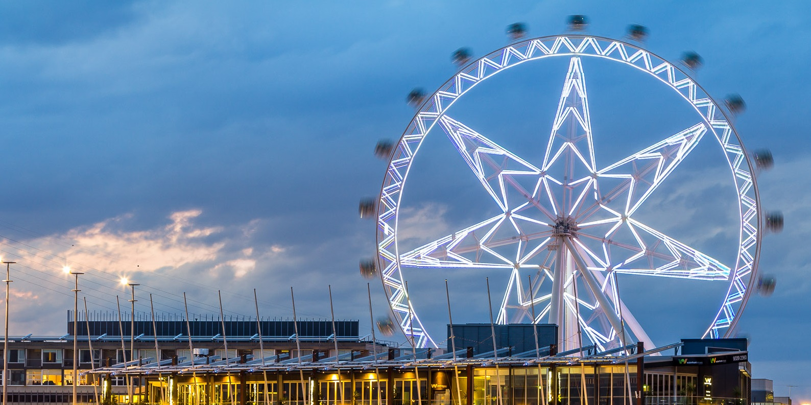
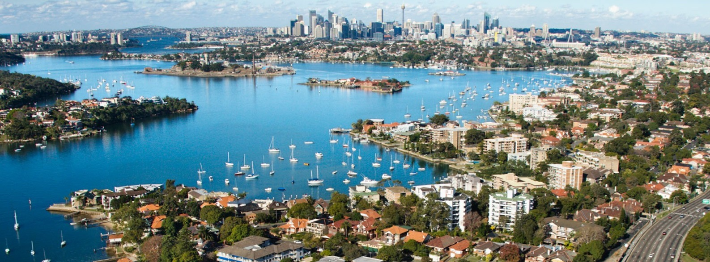

Melbourne

The capital of the state of Victoria, Melbourne is Australia’s second most populated city.
Located near the southeastern tip of Australia on the large natural bay of Port Phillip,
Melbourne is considered the nation’s cultural capital as well as an important port.
A well-planned city known for its shopping, fine restaurants and sports venues,
Melbourne is the ideal destination for travelers who appreciate the good life..
Syndney

Should be near the top of your list, and is one of the top tourist destinations in this country.
Aside from the gorgeous and picturesque views of Sydney Harbor and the Australian coastline,
there are numerous tourist attractions in Australia that are not to be missed when here.
A few to add to your list include: The Rocks, Sydney Opera House, Sydney Harbour, Darling Harbour,
Sydney Olympic Park, AMP Tower and Sydney Beaches (including: Bondi and Manly).
Perth city

Located on Australia’s southwestern coastline,
Perth is the country’s fourth-largest city and the capital of Western Australia.
Isolated from other major cities in Australia, Perth has developed its own unique character.
Although the area has been inhabited for thousands of years, there’s a youthful atmosphere
and a fun-loving attitude in this city of nearly two million people..